Tengo un gran interés por el desarrollo tecnológico en general, me apasiona todas las ventajas que él puede ofrecer como el acceso a la información y al conocimiento, la creatividad que puede surgir para generar soluciones efectivas y el aporte a la innovación para cualquier tipo de desarrollo.
El desarrollo web cada día es más creativo y me parece interesante todos los beneficios que podemos aprovechar de él, además que aporta a la sostenibilidad que es otro tema que me apasiona.
Siempre hay cosas que mejorar, eso promueve la imaginación y me mantiene motivada para seguir aprendiendo. Es un campo en el que se puede ir avanzando gracias a una red de profesionales inmersos en una comunidad cohesionada.
María Alexandra
Galarza Gallardo

curriculum vitae
